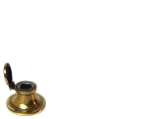
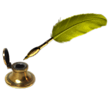
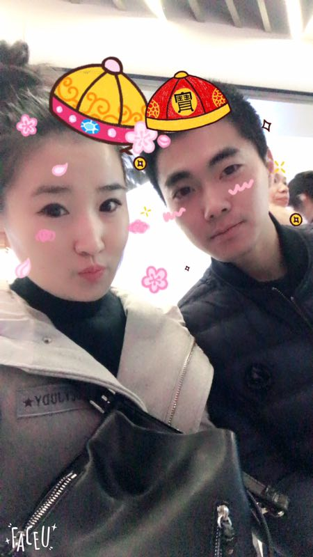

亲爱哒 ，这是宝宝给你做的一个很长的网页||||||||的一个小网页，有没有很神奇， 哈哈哈哈，宝宝现在也是技术人员了. 都能搞出这些奇奇怪怪的东西了.
'大概在 一百年之||||||| 九年之前我们就认识了 记得见你第一面的时候我就爱上|||深深的爱上了你,直到现在，宝宝只要一想到你，心里就觉得很温暖'
是不是觉得很 甜蜜||||| 肉麻，哈哈，亲爱哒，书上说爱情就是 猫吃鱼，狗吃肉||||||| 当你和他/她在一起的时候，可以忘掉整个世界.
亲爱哒，你给我的感觉就像山间的清风抚过双臂，就像是潺潺的溪水，和你在一起的时候，能感觉到自己很安静，很幸福，什么都不想再去想
亲爱哒，似水流年才是一个人的一生，剩下的都只是片刻的欢愉和不幸，不开心的时候要想宝宝，世界上还有一个人在默默的爱你
告诉我，是不是看到现在已经脸红了，哈哈，要天天开心呦，宝宝永远爱你
你也要永远爱宝宝呦
我愿这一夜长醉
流年似水般滋味
